4. Building models¶
Bayesian inference begins with specification of a probability model relating unknown variables to data. PyMC provides three basic building blocks for Bayesian probability models: Stochastic, Deterministic and Potential.
A Stochastic object represents a variable whose value is not completely determined by its parents, and a Deterministic object represents a variable that is entirely determined by its parents. In object-oriented programming parlance, Stochastic and Deterministic are subclasses of the Variable class, which only serves as a template for other classes and is never actually implemented in models.
The third basic class, Potential, represents ‘factor potentials’ ([dawidmarkov,Jordan:2004p5439]_), which are not variables but simply terms and/or constraints that are multiplied into joint distributions to modify them. Potential and Variable are subclasses of Node.
PyMC probability models are simply linked groups of Stochastic, Deterministic and Potential objects. These objects have very limited awareness of the models in which they are embedded and do not themselves possess methods for updating their values in fitting algorithms. Objects responsible for fitting probability models are described in chapter chap:modelfitting.
4.1. The Stochastic class¶
A stochastic variable has the following primary attributes:
- value:
- The variable’s current value.
- logp:
- The log-probability of the variable’s current value given the values of its parents.
A stochastic variable can optionally be endowed with a method called random, which draws a value for the variable given the values of its parents [1]. Stochastic objects have the following additional attributes that are generally specified automatically, and only overridden under particular circumstances:
- parents:
- A dictionary containing the variable’s parents. The keys of the dictionary correspond to the names assigned to the variable’s parents by the variable, and the values correspond to the actual parents. For example, the keys of 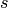‘s parents dictionary in model (disastermodel) would be 't_l' and 't_h'. Thanks to Python’s dynamic typing, the actual parents (i.e. the values of the dictionary) may be of any class or type.
- children:
- A set containing the variable’s children.
- extended_parents:
- A set containing all the stochastic variables on which the variable depends either directly or via a sequence of deterministic variables. If the value of any of these variables changes, the variable will need to recompute its log- probability.
- extended_children:
- A set containing all the stochastic variables and potentials that depend on the variable either directly or via a sequence of deterministic variables. If the variable’s value changes, all of these variables will need to recompute their log-probabilities.
- observed:
- A flag (boolean) indicating whether the variable’s value has been observed (is fixed).
- dtype:
- A NumPy dtype object (such as numpy.int) that specifies the type of the variable’s value to fitting methods. If this is None (default) then no type is enforced.
4.1.1. Creation of stochastic variables¶
There are three main ways to create stochastic variables, called the automatic, decorator, and direct interfaces.
- Automatic
Stochastic variables with standard distributions provided by PyMC (see chapter chap:distributions) can be created in a single line using special subclasses of Stochastic. For example, the uniformly-distributed discrete variable in (disastermodel) could be created using the automatic interface as follows:
s = DiscreteUniform('s', 1851, 1962, value=1900)
In addition to the classes in chapter chap:distributions, scipy.stats.distributions‘ random variable classes are wrapped as Stochastic subclasses if SciPy is installed. These distributions are in the submodule pymc.SciPyDistributions.
Users can call the class factory stochastic_from_dist to produce Stochastic subclasses of their own from probability distributions not included with PyMC.
- Decorator
Uniformly-distributed discrete stochastic variable in (disastermodel) could alternatively be created from a function that computes its log-probability as follows:
@stochastic(dtype=int) def s(value=1900, t_l=1851, t_h=1962): """The switchpoint for the rate of disaster occurrence.""" if value > t_h or value < t_l: # Invalid values return -numpy.inf else: # Uniform log-likelihood return -numpy.log(t_h - t_l + 1)
Note that this is a simple Python function preceded by a Python expression called a decorator, here called @stochastic. Generally, decorators enhance functions with additional properties or functionality. The Stochastic object produced by the @stochastic decorator will evaluate its log-probability using the function . The value argument, which is required, provides an initial value for the variable. The remaining arguments will be assigned as parents of (i.e. they will populate the parents dictionary).
To emphasize, the Python function decorated by @stochastic should compute the log-density or log-probability of the variable. That is why the return value in the example above is 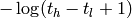 rather than 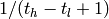.
The value and parents of stochastic variables may be any objects, provided the log-probability function returns a real number (float). PyMC and SciPy both provide implementations of several standard probability distributions that may be helpful for creating custom stochastic variables. Based on informal comparison using version 2.0, the distributions in PyMC tend to be approximately an order of magnitude faster than their counterparts in SciPy (using version 0.7).
The decorator stochastic can take several arguments:
- A flag called trace, which signals to MCMC instances whether an MCMC
trace should be kept for this variable. @stochastic(trace = False) would turn tracing off. Defaults to True.
- A flag called plot, which signals to MCMC instances whether summary
plots should be produced for this variable. Defaults to True.
- An integer-valued argument called verbose that controls the amount of
output the variable prints to the screen. The default is 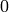, no output; the maximum value is 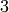.
- A Numpy datatype called dtype. Decorating a log-probability function with
@stochastic(dtype=int) would produce a discrete random variable. Such a variable will cast its value to either an integer or an array of integers. The default dtype is float.
The decorator interface has a slightly more complex implementation which allows you to specify a random method for sampling the stochastic variable’s value conditional on its parents.
@stochastic(dtype=int) def s(value=1900, t_l=1851, t_h=1962): """The switchpoint for the rate of disaster occurrence.""" def logp(value, t_l, t_h): if value > t_h or value < t_l: return -Inf else: return -log(t_h - t_l + 1) def random(t_l, t_h): return round( (t_l - t_h) * random() ) + t_l
The stochastic variable again gets its name, docstring and parents from function , but in this case it will evaluate its log-probability using the logp function. The random function will be used when s.random() is called. Note that random doesn’t take a value argument, as it generates values itself. The optional rseed variable provides a seed for the random number generator. The stochastic’s value argument is optional when a random method is provided; if no initial value is provided, it will be drawn automatically using the random method.
- Direct
It’s possible to instantiate Stochastic directly:
def s_logp(value, t_l, t_h): if value > t_h or value < t_l: return -Inf else: return -log(t_h - t_l + 1) def s_rand(t_l, t_h): return round( (t_l - t_h) * random() ) + t_l s = Stochastic( logp = s_logp, doc = 'The switchpoint for the rate of disaster occurrence.', name = 's', parents = {'t_l': 1851, 't_h': 1962}, random = s_rand, trace = True, value = 1900, dtype=int, rseed = 1., observed = False, cache_depth = 2, plot=True, verbose = 0)
Notice that the log-probability and random variate functions are specified externally and passed to Stochastic as arguments. This is a rather awkward way to instantiate a stochastic variable; consequently, such implementations should be rare.
Warning
Don’t update stochastic variables’ values in-place
Stochastic objects’ values should not be updated in-place. This confuses PyMC’s caching scheme and corrupts the process used for accepting or rejecting proposed values in the MCMC algorithm. The only way a stochastic variable’s value should be updated is using statements of the following form:
A.value = new_value
The following are in-place updates and should emph{never} be used:
A.value += 3
A.value[2,1] = 5
A.value.attribute = new_attribute_value
This restriction becomes onerous if a step method proposes values for the elements of an array-valued variable separately. In this case, it may be preferable to partition the variable into several scalar-valued variables stored in an array or list.
4.2. Data¶
Although the data are modelled with statistical distributions, their values should be treated as immutable (since they have been observed). Data are represented by Stochastic objects whose observed attribute is set to True. If a stochastic variable’s observed flag is True, its value cannot be changed, and it won’t be sampled by the fitting method..
4.2.1. Declaring stochastic variables to be data¶
In each interface, an optional keyword argument observed can be set to True. In the decorator interface, this argument is added to the @stochastic decorator:
@stochastic(observed=True)
In the other interfaces, the observed=True argument is added to the instantiation of the Stochastic, or its subclass:
x = Binomial('x', n=n, p=p, observed=True)
Alternatively, in the decorator interface only, a Stochastic object’s observed flag can be set to true by stacking an @observed decorator on top of the @stochastic decorator:
@observed
@stochastic(dtype=int)
4.3. The Deterministic class¶
The Deterministic class represents variables whose values are completely determined by the values of their parents. For example, in model (disastermodel), 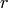 is a deterministic variable. Recall it was defined by
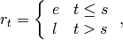
so ‘s value can be computed exactly from the values of its parents 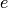, 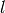 and .
A deterministic variable’s most important attribute is value, which gives the current value of the variable given the values of its parents. Like Stochastic‘s logp attribute, this attribute is computed on-demand and cached for efficiency.
A Deterministic variable has the following additional attributes:
- parents:
- A dictionary containing the variable’s parents. The keys of the dictionary correspond to the names assigned to the variable’s parents by the variable, and the values correspond to the actual parents. Thanks to Python’s dynamic typing, parents may be of any class or type.
- children:
- A set containing the variable’s children, which must be nodes.
Deterministic variables have no methods.
4.3.1. Creation of deterministic variables¶
Deterministic variables are less complicated than stochastic variables, and have similar automatic, decorator, and direct interfaces:
- Automatic
A handful of common functions have been wrapped in Deterministic objects. These are brief enough to list:
- LinearCombination:
- Has two parents 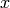 and 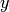, both of which must be iterable (i.e. vector-valued). This function returns:
- Index:
- Has three parents , and index. and must be iterables, index must be valued as an integer. Index returns the dot product of and for the elements specified by index: Index is useful for implementing dynamic models, in which the parent-child connections change.
- Lambda:
- Converts an anonymous function (in Python, called lambda functions) to a Deterministic instance on a single line.
- CompletedDirichlet:
- PyMC represents Dirichlet variables of length 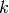 by the first 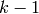 elements; since they must sum to 1, the 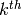 element is determined by the others. CompletedDirichlet appends the element to the value of its parent 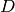.
- Logit, InvLogit, StukelLogit, StukelInvLogit:
- Various common link functions for generalized linear models.
It’s a good idea to use these classes when feasible, because certain fitting methods (Gibbs step methods in particular) implicitly know how to take them into account.
- Decorator
A deterministic variable can be created via a decorator in a way very similar to Stochastic‘s decorator interface:
@deterministic def r(switchpoint = s, early_rate = e, late_rate = l): """The rate of disaster occurrence.""" value = zeros(N) value[:switchpoint] = early_rate value[switchpoint:] = late_rate return value
Notice that rather than returning the log-probability, as is the case for Stochastic objects, the function returns the value of the deterministic object, given its parents. This return value may be of any type, as is suitable for the problem at hand. Also notice that, unlike for Stochastic objects, there is no value argument passed, since the value is calculated deterministically by the function itself. Arguments’ keys and values are converted into a parent dictionary as with Stochastic‘s short interface. The deterministic decorator can take trace, verbose and plot arguments, like the stochastic decorator [2].
Of course, since deterministic nodes are not expected to generate random variates, the longer implementation of the decorator interface available to Stochastic objects is not relevant here.
- Direct
Deterministic objects can also be instantiated directly, by passing the evaluation function to the Deterministic class as an argument:
def r_eval(switchpoint = s, early_rate = e, late_rate = l): value = zeros(N) value[:switchpoint] = early_rate value[switchpoint:] = late_rate return value r = Deterministic( eval = r_eval, name = 'r', parents = {'switchpoint': s, 'early_rate': e, 'late_rate': l}), doc = 'The rate of disaster occurrence.', trace = True, verbose = 0, dtype=float, plot=False, cache_depth = 2)
4.4. Containers¶
In some situations it would be inconvenient to assign a unique label to each parent of some variable. Consider in the following model:
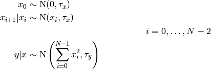
Here, depends on every element of the Markov chain , but we wouldn’t want to manually enter 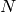 parent labels `x_0', `x_1', etc.
This situation can be handled naturally in PyMC:
x_0 = Normal(`x_0', mu=0, tau=1)
# Initialize array of stochastics
x = [x_0]
# Loop over number of elements in N
for i in range(1,N):
# Instantiate Normal stochastic, based on value of previous element in x
xi = Normal(`x_%i' % i, mu=x[-1], tau=1)
# Append to x
x.append(xi)
@observed
@stochastic
def y(value = 1, mu = x, tau = 100):
# Initialize sum of mu's
mu_sum = 0
for i in range(N):
# Append squared mu
mu_sum += mu[i] ** 2
# Calculate and return log-likelihood
return normal_like(value, mu_sum, tau)
PyMC automatically wraps list in an appropriate Container class. The expression `x_%i' % i labels each Normal object in the container with the appropriate index 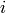; so if i=1, the name of the corresponding element becomes `x_1'.
Containers, like variables, have an attribute called value. This attribute returns a copy of the (possibly nested) iterable that was passed into the container function, but with each variable inside replaced with its corresponding value.
Containers can currently be constructed from lists, tuples, dictionaries, Numpy arrays, modules, sets or any object with a __dict__ attribute. Variables and non-variables can be freely mixed in these containers, and different types of containers can be nested [3]. Containers attempt to behave like the objects they wrap. All containers are subclasses of ContainerBase.
Containers have the following useful attributes in addition to value:
- variables
- stochastics
- potentials
- deterministics
- data_stochastics
- step_methods.
Each of these attributes is a set containing all the objects of each type in a container, and within any containers in the container.
4.5. The Potential class¶
The joint density corresponding to model (disastermodel) can be written as follows:
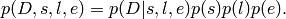
Each factor in the joint distribution is a proper, normalized probability distribution for one of the variables conditional on its parents. Such factors are contributed by Stochastic objects.
In some cases, it’s nice to be able to modify the joint density by incorporating terms that don’t correspond to probabilities of variables conditional on parents, for example:
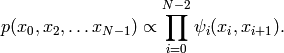
In other cases we may want to add probability terms to existing models. For example, suppose we want to constrain the difference between and in (disastermodel) to be less than 1, so that the joint density becomes
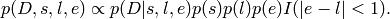
It’s possible to express this constraint by adding variables to the model, or by grouping and to form a vector-valued variable, but it’s uncomfortable to do so.
Arbitrary factors such as 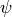 and the indicator function 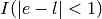 are implemented by objects of class Potential ([dawidmarkov] and [Jordan:2004p5439] call these terms ‘factor potentials’). Bayesian hierarchical notation (cf model (disastermodel)) doesn’t accomodate these potentials. They are often used in cases where there is no natural dependence hierarchy, such as the first example above (which is known as a Markov random field). They are also useful for expressing ‘soft data’ [Christakos:2002p5506] as in the second example above.
Potentials have one important attribute, logp, the log of their current probability or probability density value given the values of their parents. The only other additional attribute of interest is parents, a dictionary containing the potential’s parents. Potentials have no methods. They have no trace attribute, because they are not variables. They cannot serve as parents of variables (for the same reason), so they have no children attribute.
4.5.1. An example of soft data¶
The role of potentials can be confusing, so we will provide another example: we have a dataset 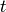 consisting of the days on which several marked animals were recaptured. We believe that the probability 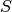 that an animal is not recaptured on any given day can be explained by a covariate vector . We model this situation as follows:
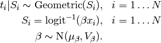
So far, so good. Now suppose we have some knowledge of other related experiments and we have a good idea of what will be independent of the value of 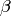. It’s not obvious how to work this ‘soft data’, because as we’ve written the model is completely determined by . There are three options within the strict Bayesian hierarchical framework:
- Work the soft data into the prior on .
- Incorporate the data from the previous experiments explicitly into the model.
- Refactor the model so that is at the bottom of the hierarchy, and assign the prior directly.
Factor potentials provide a convenient way to incorporate the soft data without the need for such major modifications. We can simply modify the joint distribution from
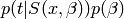
to
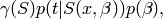
where the value of  is large if ‘s value is plausible
(based on our external information) and small otherwise. We do not know the
normalizing constant for the new distribution, but we don’t need it to use most
popular fitting algorithms. It’s a good idea to check the induced priors on
and for sanity. This can be done in PyMC by fitting the
model with the data removed.
is large if ‘s value is plausible
(based on our external information) and small otherwise. We do not know the
normalizing constant for the new distribution, but we don’t need it to use most
popular fitting algorithms. It’s a good idea to check the induced priors on
and for sanity. This can be done in PyMC by fitting the
model with the data removed.
It’s important to understand that is not a variable, so it does
not have a value. That means, among other things, there will be no
column in MCMC traces. is simply an extra term
that we are incorporating in the joint distribution.
4.5.2. Creation of Potentials¶
There are two ways to create potentials:
- Decorator
A potential can be created via a decorator in a way very similar to Deterministic‘s decorator interface:
@potential def psi_i(x_lo = x[i], x_hi = x[i+1]): """A pair potential""" return -(xlo - xhi)**2
The function supplied should return the potential’s current log-probability or log-density as a Numpy float. The potential decorator can take verbose and cache_depth arguments like the stochastic decorator.
- Direct
The same potential could be created directly as follows:
def psi_i_logp(x_lo = x[i], x_hi = x[i+1]): return -(xlo - xhi)**2 psi_i = Potential( logp = psi_i_logp, name = 'psi_i', parents = {'xlo': x[i], 'xhi': x[i+1]}, doc = 'A pair potential', verbose = 0, cache_depth = 2)
4.6. Graphing models¶
The function graph in pymc.graph draws graphical representations of Model (Chapter chap:modelfitting) instances using GraphViz via the Python package PyDot (if they are installed). See [dawidmarkov] and [Jordan:2004p5439] for more discussion of useful information that can be read off of graphical models. Note that these authors do not consider deterministic variables.
The symbol for stochastic variables is an ellipse. Parent-child relationships are indicated by arrows. These arrows point from parent to child and are labeled with the names assigned to the parents by the children. PyMC’s symbol for deterministic variables is a downward-pointing triangle. A graphical representation of model (?) follows: is shaded because it is flagged as data.
The symbol for factor potentials is a rectangle, as in the following model. Factor potentials are usually associated with undirected grahical models. In undirected representations, each parent of a potential is connected to every other parent by an undirected edge. The undirected representation of the model pictured above is much more compact: Directed or mixed graphical models can be represented in an undirected form by ‘moralizing’, which is done by the function pymc.graph.moral_graph.
4.7. Class LazyFunction and caching¶
This section gives an overview of how PyMC computes log-probabilities. This is advanced information that is not required in order to use PyMC.
The logp attributes of stochastic variables and potentials and the value attributes of deterministic variables are wrappers for instances of class LazyFunction. Lazy functions are wrappers for ordinary Python functions. A lazy function L could be created from a function fun as follows:
L = LazyFunction(fun, arguments)
The argument arguments is a dictionary container; fun must accept keyword arguments only. When L‘s get() method is called, the return value is the same as the call
fun(**arguments.value)
Note that no arguments need to be passed to L.get; lazy functions memorize their arguments.
Before calling fun, L will check the values of arguments.variables against an internal cache. This comparison is done by reference, not by value, and this is part of the reason why stochastic variables’ values cannot be updated in-place. If arguments.variables‘ values match a frame of the cache, the corresponding output value is returned and fun is not called. If a call to fun is needed, arguments.variables‘ values and the return value replace the oldest frame in the cache. The depth of the cache can be set using the optional init argument cache_depth, which defaults to 2.
Caching is helpful in MCMC, because variables’ log-probabilities and values tend to be queried multiple times for the same parental value configuration. The default cache depth of 2 turns out to be most useful in Metropolis-Hastings-type algorithms involving proposed values that may be rejected.
Lazy functions are implemented in C using Pyrex, a language for writing Python extensions.
Footnotes
| [1] | Note that the random method does not provide a Gibbs sample unless the variable has no children. |
| [2] | Note that deterministic variables have no observed flag. If a deterministic variable’s value were known, its parents would be restricted to the inverse image of that value under the deterministic variable’s evaluation function. This usage would be extremely difficult to support in general, but it can be implemented for particular applications at the StepMethod level. |
| [3] | Nodes whose parents are containers make private shallow copies of those containers. This is done for technical reasons rather than to protect users from accidental misuse. |